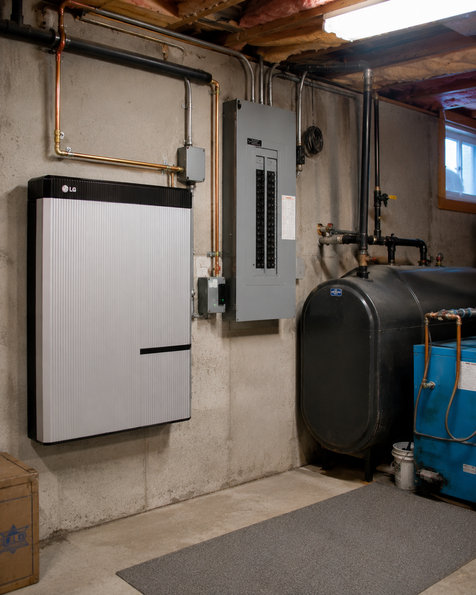

Longest rural distribution lines in New England. Highest oil-heat dependency in the country. Winter storms that routinely take rural homes offline for 24-48 hours. A battery up here isn't a backup gadget, it's a working-house tool that keeps the heat on.

Maine residential electricity climbed from roughly 15.7¢/kWh in 2010 to ~27¢/kWh today, averaging close to 4% per year. CMP and Versant supply rates jumped about 20% effective January 2026. Maine doesn't have a dedicated battery dispatch program, so the value lives in resilience (rural lines, hard winters) and solar self-consumption (NEB credits at full retail).
Maine has no utility dispatch program for residential batteries, so the value lives in two places: keeping the heat (and your fridge) on for 24-48 hours through every rural winter outage, and storing midday solar production to self-consume in the evening at full retail rates.
See the pieces of the stackIn dense suburban grids, batteries are mostly about peak shaving and dispatch programs. In rural Maine, the math is simpler: keep the heat running through a Nor'easter, keep the well pump going, keep the freezer cold. The economics that follow are built on top of the resilience case.
Maine is a state of long, sparse distribution lines running through dense forest. Versant Power serves the most rural territory in the Northeast, northern and eastern Maine, where per-customer infrastructure costs are highest and storm restoration takes the longest. CMP territory in southern Maine fares better but still sees regular multi-day events along the coast and in the western foothills.
Falling trees, ice loading, and wind-loaded wet snow take down rural feeders in ways no amount of grid hardening fully prevents. A typical winter storm year leaves rural ME homes offline for 12-48 hours at a stretch, sometimes longer.
Maine has the highest oil-heat share in the country, roughly 58% of homes. People often assume an oil-heated house "doesn't need electricity" during an outage. They're wrong: the burner ignition, the circulator pumps, and the thermostat all run on grid power. Lose the grid, lose the heat, even with a full oil tank.
A modest battery, even 5-10 kWh, can keep a typical Maine boiler running for several days during an outage. Pair it with a properly sized array and the battery recharges from solar each morning, giving you indefinite winter resilience without ever burning a drop of generator fuel.
Maine doesn't run a utility dispatch program for residential batteries, so the value flows through resilience and solar self-consumption. Each line stands on its own. Stacked, they're the math that makes the project pencil up here.
A typical Maine battery install runs 7–12 weeks from first call to Permission to Operate, with full backup runtime tested at commissioning.
The questions that actually come up in the first installer conversation, answered straight, for a typical ME homeowner in 2026.
Almost everyone in rural ME prioritizes the same essentials: the boiler or heat pump, the well pump, the fridge, the chest freezer, internet, and a couple of light circuits. That bundle averages 5-15 kWh per day depending on the house, which is well within reach of a single 13.5 kWh battery. AC, electric ranges, and EV charging are the loads typically left off the backup panel unless you're sizing for two batteries.
Highly variable by location. Coastal southern ME homes often see 2-12 hour outages in a typical winter. Rural CMP territory in the western foothills sees 12-36 hours regularly during ice storms. Versant territory in the north and Down East routinely runs 24-48 hours after a major event, and longer during widespread storms when crews work outward from population centers. Sizing the battery against your worst-case historic outage, not the average, is the right approach.
A bit, depending. Cold-climate heat pumps draw most of their power on the coldest nights, exactly when storms tend to hit. If you're keeping oil as a backup, the battery only needs to run the boiler in a power outage. If you've gone heat-pump-primary, sizing typically jumps to two batteries to cover heating load through a 24-hour outage. The Score models both scenarios with your specific equipment.
No. NEB credits your exported solar at retail rate. A battery just routes some of your midday production to home use rather than the grid, which doesn't reduce credit value, it just shifts when your home draws against the grid. If anything, a battery makes a smaller solar array stretch further, since you're self-consuming more efficiently.
Both have a place. A propane generator runs as long as the tank lasts and handles whole-house load through any outage length, but requires fuel deliveries, annual service, and emits noise and exhaust. A battery is silent, requires no fuel, recharges from solar, and qualifies for ~30% pass-through if financed via lease/PPA, but caps your runtime at the size of the battery. Most rural Maine homeowners keeping a generator add a battery alongside it; the battery covers 95% of outages without ever starting the generator, and the generator is reserved for the rare multi-day events.
True off-grid in Maine, disconnected from the utility entirely, generally requires significantly more battery than a grid-tied resilience setup, plus a backup generator, plus careful load management. It's possible, but for most ME homeowners the goal is grid-tied with battery backup: you keep the utility connection (and NEB credits), and the battery covers any outage. The Score lays out the trade-offs if you're considering the full off-grid path.
Looking for the same kind of program in another state, or a different program in yours? Tap any pill to jump.
Your Home Efficiency Score sizes the right battery for your panel, your bill, and your outage profile, runs the rate-hedge math, and shows your real backup runtime, based on your address and your actual utility.
Get my report